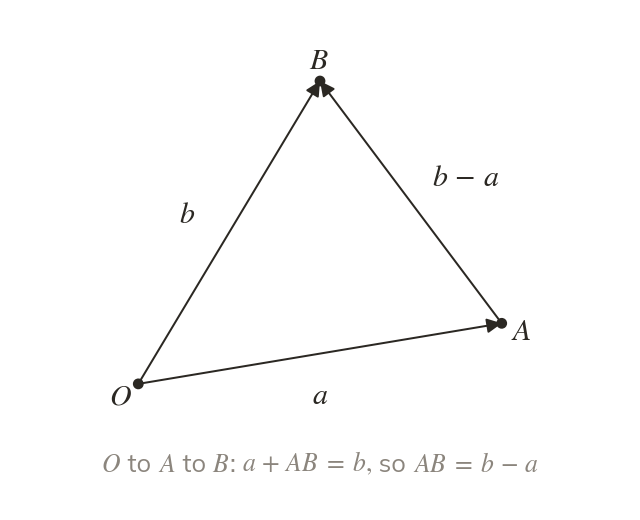
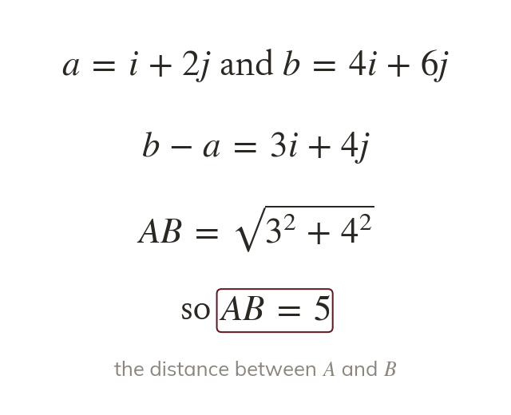
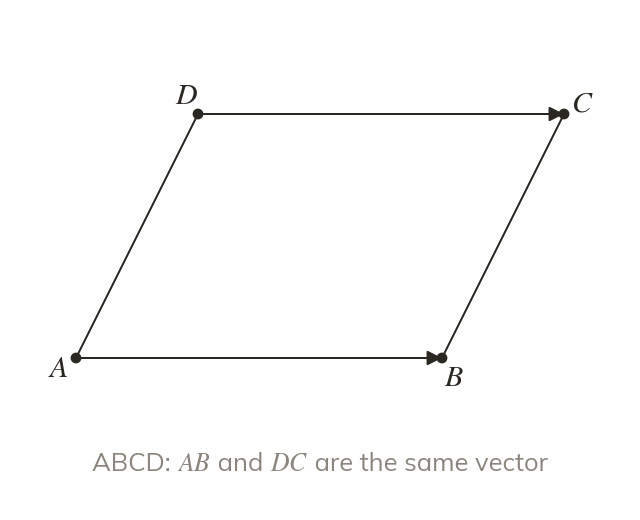
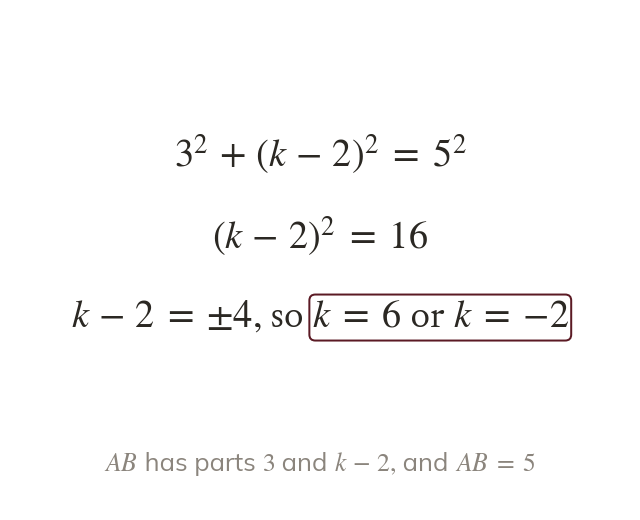

From the origin
The position vector of a point is OA→, written a. The vector from to is end minus start: AB→ =
A position vector pins a vector to the origin, so points become vectors and the vector between two points is a subtraction. This lets every coordinate problem, from distances to parallelograms, be done with vectors, and it is how mechanics gives a particle's position.
Work down the page at your own pace. Write every answer in your book first, then click to check it.
Read each card, then follow the worked examples one step at a time.

The position vector of a point is OA→, written a. The vector from to is end minus start: AB→ =

The distance is the magnitude of AB→. So by Pythagoras on its parts.
Pick an answer. If it's wrong, the feedback tells you which mistake it was.
Read each card, then follow the worked examples one step at a time.

In a parallelogram , AB→ = DC→ and AD→ = BC→. So D is found from by going back along AB→:

If AB is known and one part of AB→ is unknown, Pythagoras gives an equation. Squaring means there are often two answers.
Pick an answer. If it's wrong, the feedback tells you which mistake it was.
Finished? Next lesson: 11.5 Solving Geometric Problems.
For each skill, tap the one that is true for you today. Your Revise pages start with anything you mark Not yet.
Your ratings are saved on this device only.
Log in, then search for a code to practise that skill.